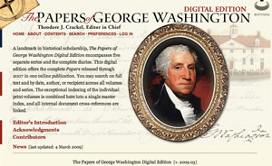
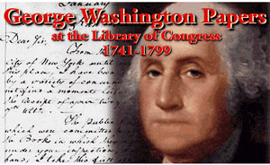

This is an archived copy of History Matters, provided by the Roy Rosenzweig Center for History and New Media. To explore this content in a new interface, visit Who Built America?.

The Papers of George Washington Digital Edition (access by subscription)
http://rotunda.upress.virginia.edu:8080/pgwde/
University of Virginia Press, Charlottesville.
George Washington Papers at the Library of Congress, 17411799
http://memory.loc.gov/ammem/gwhtml/gwhome.html
Manuscript Division, Library of Congress, Washington, D.C.
Reviewed Sept. 15 - Oct. 15, 2007.
These two products may be defined as electronic archives, strictly speaking, as they both provide primary documents and there is significant overlap in content. But in every other aspect, discussing them is like comparing apples and oranges. The Papers of George Washington Digital Edition (PGWDE) is a “living edition,” access to which must be purchased, with the subscription cost tied to a sliding scale based on institution size. The George Washington Papers at the Library of Congress, 17411799 (GWPLC) is a static archive and access to it is free.
The PGWDE is comprised of the fifty-two volumes published since 1969 by the documentary project at the University of Virginia. The most comprehensive edition to date, the total number of documents in PGWDE is not disclosed at the top level, which would assist observant users in quickly assessing the completeness of the product. PGWDE unquestionably trumps GWPLC and all earlier editions as the edition of choice for scholars of George Washington. The GWPLC is comprised of sixty-five thousand documents, a number that is unlikely to change, from the worlds largest collection of Washingtons papers, at the Library of Congress. In PGWDE, we learn only after drilling down six layers from the introduction that the entire corpus of Washington is “more than 100,000 documents.” Of course, the number of documents in any given documentary edition constantly shifts, but it would be nice to have an overall statement of content and scope at a more prominent place in the electronic edition.

Some of the documents in GWPLC have transcriptions, but the transcriptions are linked above the image of each document in a manner that is not readily apparent to new users. The transcriptions are, for the most part, from the Fitzpatrick edition of Washingtons papers. John C. Fitzpatrick was chief of the Manuscript Division at the Library of Congress in the 1930s and 1940s when he edited the thirty-nine-volume The Writings of George Washington from the Original Manuscript Sources, 17451799 (19311944). It was common for editors of Fitzpatricks generation to expand abbreviations, add punctuation for sense, alter capitalization, and drop salutations at the end of letters as extraneous. A frequent argument for making such alterations in the text was that it enhanced readability and saved space. GWPLC makes the claim that the Fitzpatrick “edition has been, and continues to be, a mainstay for general audiences and scholars,” but it does not make the equal, and deserved, claim for the modern documentary edition that makes up PGWDE. Users of GWPLC are misled about the authority of the text. Scholars who care about the distinctions of capitalization, underscoring, and complete closing salutations, for example, should not rely on GWPLC because its underlying methodology is out of date.

One of the most significant developments in the field of documentary editing in the past thirty years has been the move away from an interventionist style of editing. Most documentary editing projects have moved toward a more literal style of transcription. Old arguments about space limitations and readability are less compelling in the electronic environment. If editors want to cultivate a constituency of sophisticated users, then it makes sense to provide clear and accurate transcriptions that follow the original. Users of the GWPLC who compare the manuscript against the Fitzpatrick transcription will quickly see the discrepancies. (See, for example, Washington to Robert McKenzie, October 9, 1774, in the GWPLC edition, which preserves none of the indentions or ampersands from the original and drops capitalization and parentheticals.)
The editors and publishers of PGWDE spent a good deal of time and energy developing an elegant interface that enables readers to navigate the edition. Users always know where they are in the edition and where they have been. A central, defining feature of PGWDE that showcases the advantages of an electronic documentary edition is the hyperlinking of cross-references (especially from letter to letter). The editors note there are over forty-three thousand of these links. Users can now follow a discussion or theme through the letters without needing to search by correspondent or go back and forth between index and contents. Users are also given expanded values for abbreviations in the text, saving them the trouble of consulting the front matter for them.
GWPLC has the look and feel of the other American Memory editions of the Founding Fathers. It has a fairly straightforward interface and provides useful sections such as a timeline featuring illustrations and hyperlinks to selected documents. The nicely done essay “George Washington: Surveyor and Mapmaker” links to documents in the archive. This free Web site is well suited for the general user and the Library of Congresss broad constituency.
Few established documentary editions have converted to an electronic environment, and the features of PGWDE are exactly the kind users should expect. One of the biggest challenges facing such projects is the inevitable inconsistencies that arise when material comes together in the electronic environment. With print publications, an individual volume with its back-of-the-book index works very nicely. But consider the difficulties of merging six different series (Diaries, Revolutionary War, Colonial, Confederation, Presidential, and Retirement) into a unified presentation. Only if the different series editors had adhered to a rigorous and unchanging set of naming conventions during the creation of the edition would a unified set now emerge. That is a challenging task for any scholar, one made especially difficult when staffs and funding levels change over the years. The PGWDE editors address this issue as follows: The editors “worked to resolve the often varied ways individuals, unique topics, and identical sources had been identified by fifteen different editors over a period of almost forty years; and, based on that effort, to derive a cumulative index and new short-title and repository code lists.” That optimistic statement may gloss over the complexity of the process, and it is a tribute to all involved that they found ways to work around this central issue. Purchasers of PGWDE will benefit from new content, corrections, and improve ments as they are issued, and will have a superior product in every respect for any scholarly work on George Washington.
Susan Holbrook Perdue
Thomas Jefferson Foundation
Charlottesville, Virginia